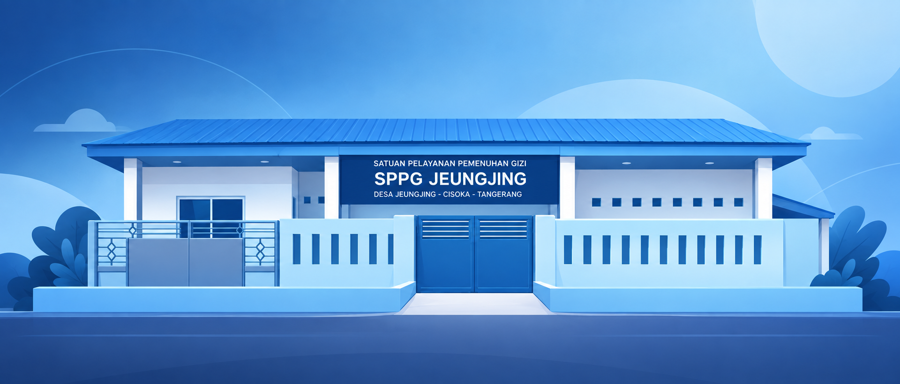

Satuan Pelayanan Pemenuhan Gizi
SPPG Jeungjing menyiapkan dan mendistribusikan makanan bergizi setiap hari untuk mendukung tumbuh kembang anak-anak dan kesehatan ibu di Desa Jeungjing, Kecamatan Cisoka.

Ringkasan
SPPG Jeungjing beroperasi setiap hari kerja, menyiapkan makanan bergizi langsung dari dapur menuju satuan pendidikan dan kelompok penerima manfaat di wilayah layanan.
Hari ini
Susunan menu bergizi seimbang yang sedang disiapkan dan didistribusikan hari ini.
Dampak
Kelompok yang menerima manfaat langsung dari layanan SPPG Jeungjing.
Kabar Terbaru
Kabar dan pengumuman terbaru dari SPPG Jeungjing akan diperbarui secara berkala.
Lokasi
Kp. Kecok, RT.004, Desa Jeungjing, Kecamatan Cisoka, Kabupaten Tangerang, Banten 15730
Hubungi Kami